autowisp.database.data_model package
Class Inheritance Diagram
![Inheritance diagram of AlternateParameterName, Condition, ConditionExpression, Configuration, DDL, DataModelBase, DataModelSubBase, DiagnosticType, Error, HDF5Attribute, HDF5DataSet, HDF5Link, HDF5Product, HDF5StructureVersion, Image, ImageDiagnostics, ImageMasterSelection, ImageProcessingProgress, ImageType, InputMasterTypes, LightCurveProcessingProgress, LightCurveStatus, MasterFile, MasterType, ObservingSession, Parameter, PhotometryDiagnostics, PipelineRun, ProcessedImages, ProcessingSequence, Step, StepDependencies, Target](../_images/inheritance-329700269ceaefb7bde101997cce3b97bbb0bd0f.png)
Add all tables to __all__.
- class autowisp.database.data_model.AlternateParameterName(**kwargs)[source]
Bases:
DataModelBase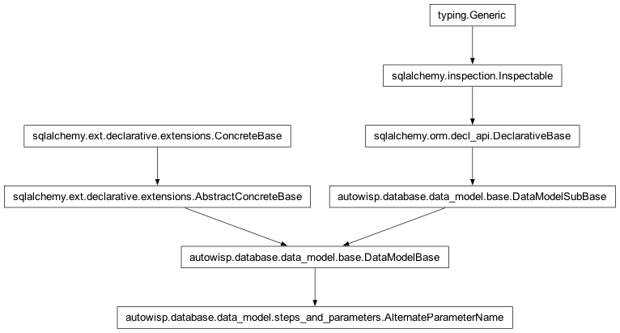
Table describing alternate names for parameters.
- alt_name
An alternate name for the parameter.
- id
A unique identifier for each row.
- param_id
The ID of the parameter.
- timestamp
When record was last changed
- class autowisp.database.data_model.Condition(**kwargs)[source]
Bases:
DataModelBase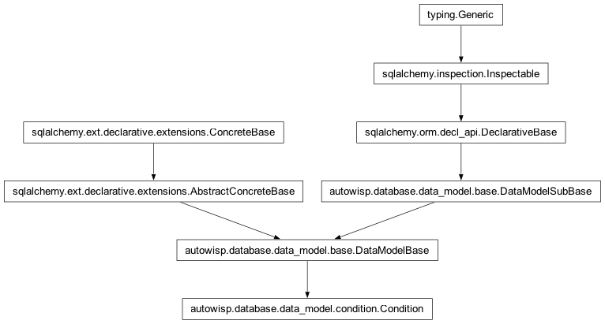
The table describing the Conditions for given configuration to apply.
Each condition is a combination of condition expressions that must all be satisfied simultaneously for the condition to be considered satisfied.
- expression
- expression_id
The id of the condition expression that is part of this condition.
- id
A unique identifier for each row.
- notes
Any user supplied notes describing the condition.
- timestamp
When record was last changed
- class autowisp.database.data_model.ConditionExpression(**kwargs)[source]
Bases:
DataModelBase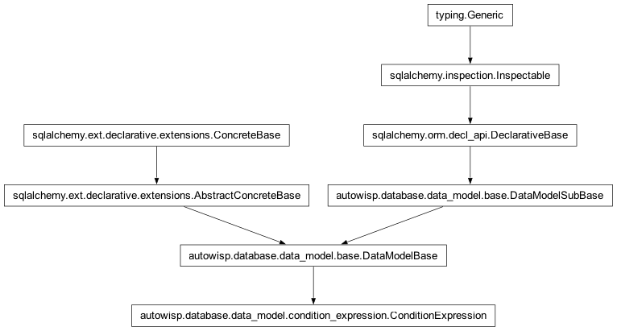
The table describing the Condition Expressions
- expression
The expression to evaluate to determine if an image meets the condition.
- id
A unique identifier for each row.
- notes
Any user supplied notes describing the condition expression.
- timestamp
When record was last changed
- class autowisp.database.data_model.Configuration(**kwargs)[source]
Bases:
DataModelBaseTable recording the values of the pipeline configuration parameters.
- condition_expressions
- condition_id
The id of the condition that must be met for this configuration to apply
- id
A unique identifier for each row.
- notes
Any user supplied notes describing the configuration.
- parameter
- parameter_id
The name of the configuration parameter.
- timestamp
When record was last changed
- value
The value of the configuration parameter for the given version for images satisfying the given conditions.
- version
The version of the configuration parameter. Later versions fall back on earlier versions if an entry for the parameter is not found.
- class autowisp.database.data_model.DiagnosticType(**kwargs)[source]
Bases:
DataModelBaseThe table listing available diagnostic quantities.
- description
A description of the diagnostic.
- id
A unique identifier for each row.
- name
The name of the diagnostic.
- timestamp
When record was last changed
- class autowisp.database.data_model.Error(**kwargs)[source]
Bases:
DataModelBase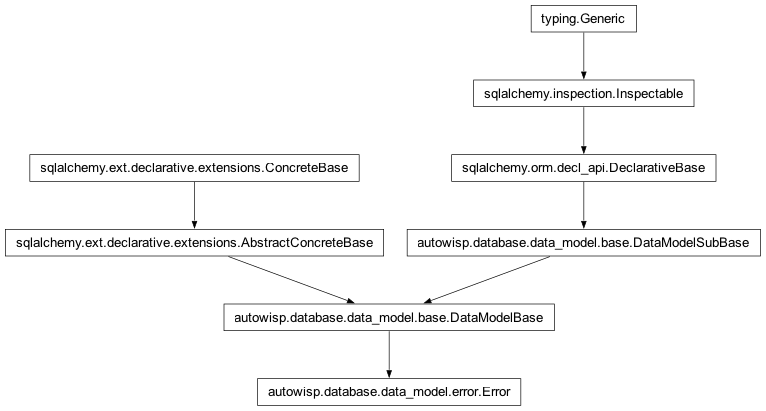
A persisted pipeline/step/BUI error.
Holds the queryable subset of an
AutoWISPError– the fields list views and aggregate queries need, so they never have to open the sidecar. The heavy remainder (full message, complete related-file list,details, traceback) lives in a per-error JSON sidecar referenced bysidecar_path; the two are disjoint, so nothing has to be kept in sync.Artifact links are foreign keys only for artifacts that are genuine database rows –
image_idandmaster_file_id. DR files and lightcurves are HDF5 files on disk with no row to reference, so they appear (by path) only in the sidecar’s related-file list.All links use
ON DELETE SET NULLso an error row stays valid as a historical record even if the artifact or run it referred to is later removed.- component
‘step’, ‘pipeline’, or ‘bui’.
- Type:
Which component raised it
- created
When the failure surfaced (the exception’s ‘crashed’ time).
- exception_class
Concrete exception class name, e.g. ‘SolveAstrometryError’, for filtering all occurrences of a kind of failure.
- id
A unique identifier for each row.
- image_id
The image the error is about, when a related file maps to a known image row.
- master_file_id
The master file the error is about, when a related file maps to a known master row.
- pipeline_run_id
The pipeline run during which the error occurred; NULL for standalone CLI/BUI errors with no run.
- resolved
When a user marked this error resolved; NULL while open. Open errors drive the error badge, progress-grid markers, and the start-processing gate; resolved errors are kept as history.
- sidecar_path
Path to the JSON detail sidecar, relative to the project home; NULL if the sidecar write failed (row stays valid).
- step_name
The processing step that failed; set for step errors.
- subprocess_id
PID of the multiprocessing worker that raised, when the error travelled out of a worker; NULL for main-process errors.
- timestamp
When record was last changed
- user_message
Short, jargon-free description for the BUI/CLI. The full technical message lives in the sidecar.
- class autowisp.database.data_model.HDF5Attribute(**kwargs)[source]
Bases:
DataModelBase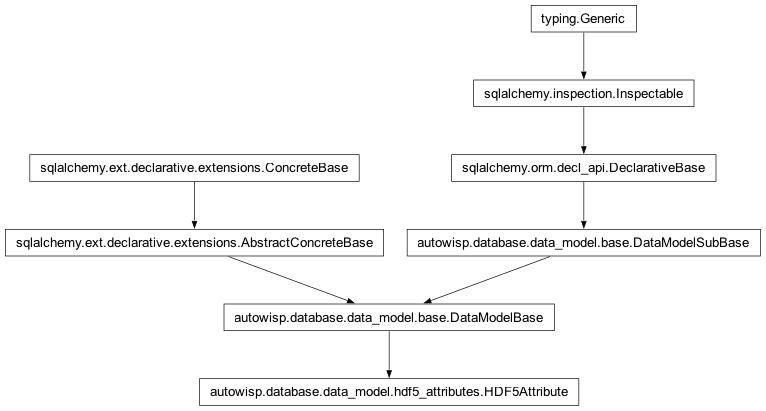
The table describing how to add attributes in HDF5 files.
- description
A brief description of what this attribute tracks.
- dtype
The data type to use for this dataset. See h5py for possible values and their meanings.
- hdf5_structure_version_id
Which structure version of which pipeline product is this element configuration for.
- id
A unique identifier for each row.
- name
The name to give to use for this attribute within the HDF5 file.
- parent
The full absolute path to the group or dataset to add this attribute to.
- pipeline_key
How is this attribute referred to by the pipeline.
- structure_version
- timestamp
When record was last changed
- class autowisp.database.data_model.HDF5DataSet(**kwargs)[source]
Bases:
DataModelBaseThe table describing how to include datasets in HDF5 files.
- abspath
The full absolute path to the dataset within the HDF5 file.
- compression
If not NULL, which compression filter to use when creating the dataset.
- compression_options
Any options to pass to the compression filter. For gzip, this is passed as int(compression_options).
- description
A brief description of what this attribute tracks.
- dtype
The data type to use for this dataset. See h5py for possible values and their meanings.
- hdf5_structure_version_id
Which structure version of which pipeline product is this element configuration for.
- id
A unique identifier for each row.
- pipeline_key
How is this dataset referred to by the pipeline.
- replace_nonfinite
For numeric datasets, if this is not NULL, any non-finite values are replaced by this value.
- scaleoffset
If not null, enable the scale/offset filter for this dataset with the specified precision.
- shuffle
Should the shuffle filter be enabled?
- structure_version
- timestamp
When record was last changed
- class autowisp.database.data_model.HDF5Link(**kwargs)[source]
Bases:
DataModelBaseTable describing links of chosen versions of products in HDF5 files.
- abspath
The full absolute path to the link in the HDF5 file.
- description
A brief description of what this attribute tracks.
- hdf5_structure_version_id
Which structure version of which pipeline product is this element configuration for.
- id
A unique identifier for each row.
- pipeline_key
How is this link referred to by the pipeline.
- structure_version
- target
The full absolute path the link should point to.
- timestamp
When record was last changed
- class autowisp.database.data_model.HDF5Product(**kwargs)[source]
Bases:
DataModelBaseThe types of pipeline products stored as HDF5 files.
- description
A description of the product type.
- id
A unique identifier for each row.
- pipeline_key
How is this product referred to in the pipeline (e.g. “datareduction” or “lightcurve”
- structure_versions
- timestamp
When record was last changed
- class autowisp.database.data_model.HDF5StructureVersion(**kwargs)[source]
Bases:
DataModelBaseThe versions of structures for the HDF5 pipeline products.
- attributes
- datasets
- hdf5_product_id
The type of pipeline product this structure configuration version is for.
- id
A unique identifier for each row.
- links
- product
- timestamp
When record was last changed
- version
An identifier for distinguishing the separate configuration versions of a single pipeline product type.
- class autowisp.database.data_model.Image(**kwargs)[source]
Bases:
DataModelBase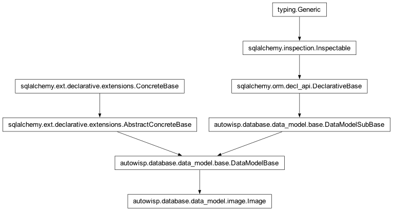
The table describing the image specified
- diagnostics: Mapped[List['ImageDiagnostics']]
- id
A unique identifier for each row.
- image_type
- image_type_id
The id of the image type
- jd
Mid-exposure Julian date of the observation
- notes
The notes provided for the image
- observing_session
- observing_session_id
The id of the observing session
- photometry_diagnostics: Mapped[List['PhotometryDiagnostics']]
- processing: Mapped[List[ProcessedImages]]
- raw_fname
The full path of the raw image
- timestamp
When record was last changed
- class autowisp.database.data_model.ImageDiagnostics(**kwargs)[source]
Bases:
ImageDiagnosticBase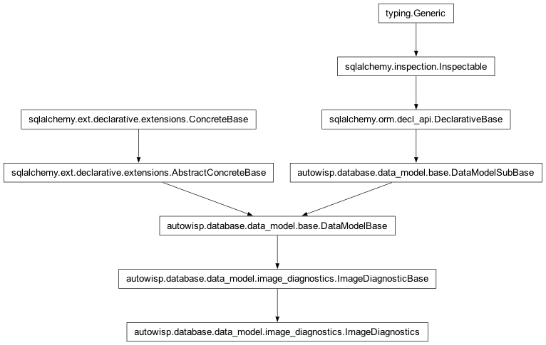
Floating point diagnostics associated with a calibrated image.
- channel
The color channel this diagnostic value corresponds to.
- diagnostic_id
The diagnostic this value corresponds to.
- id
A unique identifier for each row.
- image
- image_id
The image these diagnostics belong to.
- timestamp
When record was last changed
- type_
- value
The value of the diagnostic for this image and channel.
- class autowisp.database.data_model.ImageMasterSelection(**kwargs)[source]
Bases:
DataModelSubBase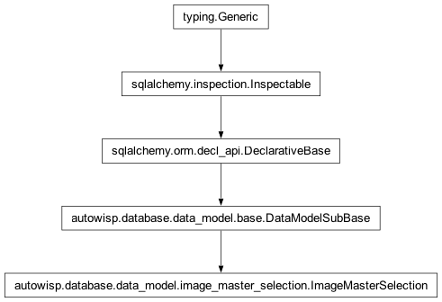
Records the resolved master file selected for each image/channel/type.
Populated when a photometric reference is registered in the BUI, binding each qualifying image/channel to the selected MasterFile. Downstream steps (create_lightcurves, epd, tfa) query this table first to guarantee they use the same master as fit_magnitudes, without re-evaluating conditions.
- channel
The color channel for which the master was selected.
- image_id
The image for which the master was selected.
- master_file_id
The master file that was selected for this image/channel/type.
- master_type_id
The type of master that was selected.
- timestamp
When record was last changed
- class autowisp.database.data_model.ImageProcessingProgress(**kwargs)[source]
Bases:
DataModelBaseThe table describing the Image Processing Progress
- applied_to: Mapped[List[ProcessedImages]]
- configuration_version
config version of image
- finished
The time processing is known to have ended (NULL if possibly still on-going)
- id
A unique identifier for each row.
- image_type
- image_type_id
The id of the image type being processed
- notes
Any user supplied notes about the processing.
- run
- run_id
The id of the pipeline run that this processing is part of
- started
The time processing started
- step
- step_id
Id of the step that was applied
- timestamp
When record was last changed
- class autowisp.database.data_model.ImageType(**kwargs)[source]
Bases:
DataModelBaseThe table describing the different image types.
- description
The description of the image type
- id
A unique identifier for each row.
- image
- name
The image type name
- timestamp
When record was last changed
- class autowisp.database.data_model.InputMasterTypes(**kwargs)[source]
Bases:
DataModelBase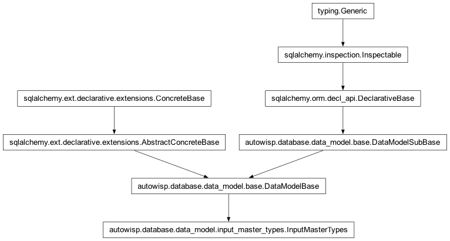
The table describing the prerequisites for a step to run
- config_name
The name of the configuration parameter that specifies the master when running the specified step.
- id
A unique identifier for each row.
- image_type
- image_type_id
The image type for which this prerequisite applies.
- master_type
- master_type_id
The master type required for the step to run.
- optional
Can processing by the given step of the given types of images can proceed if the given type of master is not found?
- step
- step_id
The step for which this prerequisite applies.
- timestamp
When record was last changed
- class autowisp.database.data_model.LightCurveProcessingProgress(**kwargs)[source]
Bases:
DataModelBase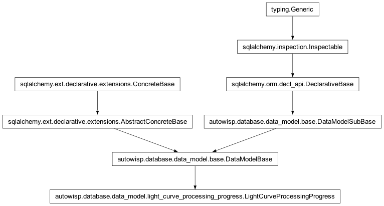
The table describing the light curve processing progress
- configuration_version
config version of image
- final
Is this the final processing status? The only case where
status=1is not final is for magnitude fitting, where there may be additional iterations needed.
- finished
The time processing is known to have ended (NULL if possibly still on-going)
- id
A unique identifier for each row.
- notes
Any user supplied notes about the processing.
- run
- run_id
The id of the pipeline run that this processing is part of
- single_photref_id
The ID of the single photometric reference for which LC points were processed.
- sphotref
- started
The time processing started
- step
- step_id
Id of the step that was applied
- timestamp
When record was last changed
- class autowisp.database.data_model.LightCurveStatus(**kwargs)[source]
Bases:
DataModelSubBase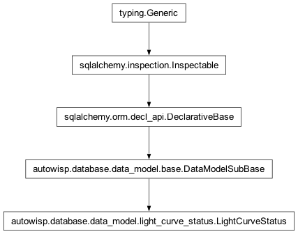
Table tracking the status of lightcurves for interrupted steps.
- id
A unique identifier for each row.
- processing
- progress_id
The ID of the LC processing progress which was interrupted
- status
The status of the processing (0 = started, >0 = successfully saved progress, negative values indicate various reasons for failure).
- timestamp
When record was last changed
- class autowisp.database.data_model.MasterFile(**kwargs)[source]
Bases:
DataModelBaseThe table tracking master files generated and used by the pipeline.
- enabled
Can this master be used for calibrations?
- filename
The full path of the master file.
- id
A unique identifier for each row.
- master_type
- progress_id
The ImageProcessingProgress or LightCurveProcessingProgress that generated this master, if any.
- timestamp
When record was last changed
- type_id
The type of master file.
- use_smallest
Use the master of this type for which this expression evaluated against image header gives the smallest value
- class autowisp.database.data_model.MasterType(**kwargs)[source]
Bases:
DataModelBase
The table tracking the types of master files used by the pipeline.
- condition_id
The collection of expression involving header keywords that must match between an image and a master for a master to be useable for calibrating that image.
- description
A description of the master file type.
- id
A unique identifier for each row.
- maker_image_split_condition_id
The collection of expression involving header keywords that must match between all images that are combined into a master in addition to the expressions specified by
condition_id.
- maker_image_type_id
The image type to which the maker step is applied when creating masters of this type.
- maker_step_id
The step which produces this type of master frames.
- master_files
- match_expressions: Mapped[List[ConditionExpression]]
- name
The name of the master file type.
- split_expressions: Mapped[List[ConditionExpression]]
- timestamp
When record was last changed
- class autowisp.database.data_model.ObservingSession(**kwargs)[source]
Bases:
DataModelBaseThe table describing the observing session
- camera
- camera_id
The id of the camera
- end_time_utc
The end time of the observing session in UTC
- id
A unique identifier for each row.
- images
- label
Unique label assigned to the observing session
- mount
- mount_id
The id of the mount
- notes
The notes provided for the observing session
- observatory
- observatory_id
The id of the observatory
- observer
- observer_id
The id of the observer
- start_time_utc
The start time of the observing session in UTC
- target
- target_id
The id of the target
- telescope
- telescope_id
The id of the telescope
- timestamp
When record was last changed
- class autowisp.database.data_model.Parameter(**kwargs)[source]
Bases:
DataModelBaseTable describing the configuration parameters needed by the pipeline.
- description
Description of what the step does.
- id
A unique identifier for each row.
- name
The name of the step within the pipeline.
- timestamp
When record was last changed
- class autowisp.database.data_model.PhotometryDiagnostics(**kwargs)[source]
Bases:
ImageDiagnosticBase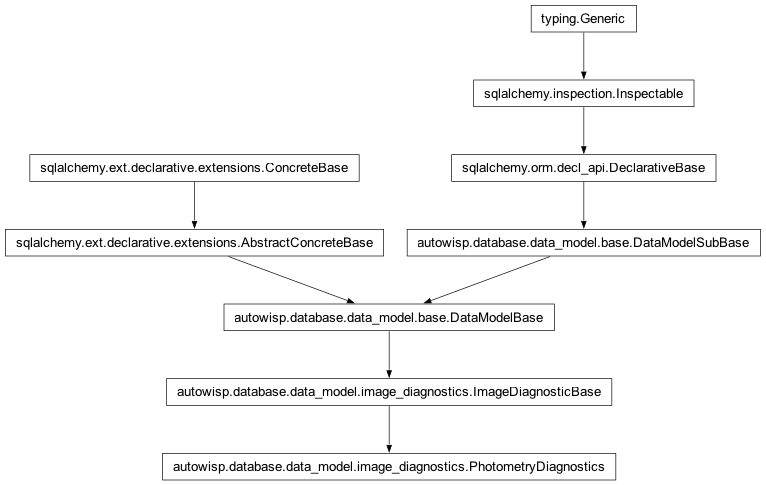
Floating point diagnostics for each photometry in each image.
- channel
The color channel this diagnostic value corresponds to.
- diagnostic_id
The diagnostic this value corresponds to.
- id
A unique identifier for each row.
- image
- image_id
The image these diagnostics belong to.
- photometry_id
The photometry these diagnostics belong to.
- timestamp
When record was last changed
- type_
- value
The value of the diagnostic for this image and channel.
- class autowisp.database.data_model.PipelineRun(**kwargs)[source]
Bases:
DataModelBaseThe table tracking runs of the pipeline.
- code_version
dirty’ suffix when the working tree had uncommitted changes).
- Type:
Identifier of the code version used for the run, as returned by get_code_version_str() (a git hash, with a ‘
- finished
The end time of the pipeline run.
- host
Hostname or other identifier of the computer where processing is/was done
- id
A unique identifier for each row.
- process_id
Identifier of the process performing this calibration step
- started
The start time of the pipeline run.
- timestamp
When record was last changed
- class autowisp.database.data_model.ProcessedImages(**kwargs)[source]
Bases:
DataModelBase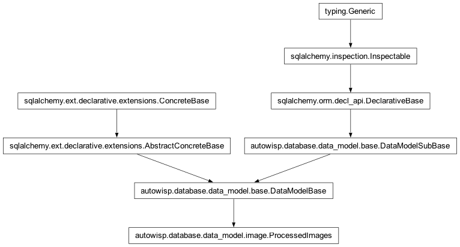
The table describing the processed images/channels by each step.
- channel
The channel of the image that was processed.
- final
Is this the final processing status? The only case where
status=1is not final is for magnitude fitting, where there may be additional iterations needed.
- id
A unique identifier for each row.
- image
- image_id
The image that was processed.
- processing
- progress_id
The id of the processing progress
- status
The status of the processing (0 = started, >0 = successfully saved progress, negative values indicate various reasons for failure). The meaning of negative values is step dependent. For most steps 1 is the final status, but for magnitude fitting the value indicates the iteration.
- timestamp
When record was last changed
- class autowisp.database.data_model.ProcessingSequence(**kwargs)[source]
Bases:
DataModelBase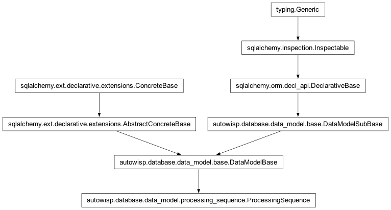
The sequence of steps/image type to be processed by the pipeline.
- id
A unique identifier for each row.
- image_type
- image_type_id
The image type to be processed by the step.
- step
- step_id
The step to be executed.
- timestamp
When record was last changed
- class autowisp.database.data_model.Step(**kwargs)[source]
Bases:
DataModelBase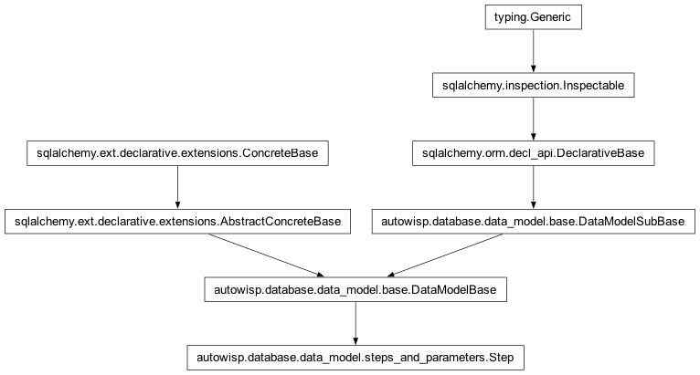
The table describing the processing steps constituting the pipeline
- description
Description of what the step does.
- id
A unique identifier for each row.
- name
The name of the step within the pipeline.
- prerequisites: Mapped[List[StepDependencies]]
- timestamp
When record was last changed
- class autowisp.database.data_model.StepDependencies(**kwargs)[source]
Bases:
DataModelBaseThe table describing the prerequisites for a step to run
- allow_pending
If True and blocked_image_type and blocking_image_type are the same the blocked step can proceed for any images for which the blocking step is complete. Otherwise the presence of any images of the blocking type for which the blocking step is not complete prevents the blocked step from proceeding for the blocked image type.
- blocked_image_type_id
The image type for which this prerequisite applies.
- blocked_imtype
- blocked_step
- blocked_step_id
The step for which this prerequisite applies.
- blocking_image_type_id
The image type for which the prerequisite step must be completed.
- blocking_imtype
- blocking_step
- blocking_step_id
The step which must be completed before the blocked step can begin.
- id
A unique identifier for each row.
- timestamp
When record was last changed
- class autowisp.database.data_model.Target(**kwargs)[source]
Bases:
DataModelBase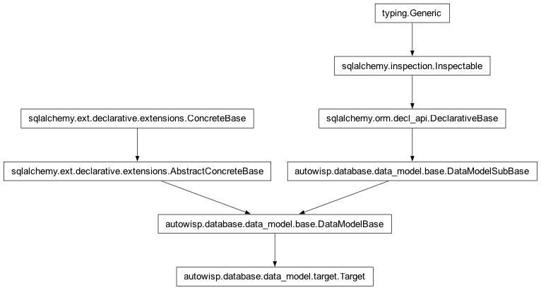
The table describing the target.
- dec
The dec of the target
- id
A unique identifier for each row.
- name
The name of the target
- notes
The notes about the target
- observing_sessions
- ra
The ra of the target
- timestamp
When record was last changed
Subpackages
- autowisp.database.data_model.provenance package
- Class Inheritance Diagram
CameraCameraAccessCameraChannelCameraTypeMountMountAccessMountTypeObservatoryObserverTelescopeTelescopeAccessTelescopeType- Submodules
- autowisp.database.data_model.provenance.camera module
- autowisp.database.data_model.provenance.camera_access module
- autowisp.database.data_model.provenance.camera_channel module
- autowisp.database.data_model.provenance.camera_type module
- autowisp.database.data_model.provenance.mount module
- autowisp.database.data_model.provenance.mount_access module
- autowisp.database.data_model.provenance.mount_type module
- autowisp.database.data_model.provenance.observatory module
- autowisp.database.data_model.provenance.observer module
- autowisp.database.data_model.provenance.telescope module
- autowisp.database.data_model.provenance.telescope_access module
- autowisp.database.data_model.provenance.telescope_type module
Submodules
- autowisp.database.data_model.base module
- autowisp.database.data_model.condition module
- autowisp.database.data_model.condition_expression module
- autowisp.database.data_model.configuration module
- autowisp.database.data_model.hdf5_attributes module
- autowisp.database.data_model.hdf5_datasets module
- Class Inheritance Diagram
HDF5DataSetHDF5DataSet.__str__()HDF5DataSet.abspathHDF5DataSet.compressionHDF5DataSet.compression_optionsHDF5DataSet.descriptionHDF5DataSet.dtypeHDF5DataSet.hdf5_structure_version_idHDF5DataSet.idHDF5DataSet.pipeline_keyHDF5DataSet.replace_nonfiniteHDF5DataSet.scaleoffsetHDF5DataSet.shuffleHDF5DataSet.structure_versionHDF5DataSet.timestamp
- autowisp.database.data_model.hdf5_links module
- autowisp.database.data_model.hdf5_products module
- autowisp.database.data_model.hdf5_structure_versions module
- autowisp.database.data_model.image module
- Class Inheritance Diagram
ImageImageProcessingProgressImageProcessingProgress.applied_toImageProcessingProgress.configuration_versionImageProcessingProgress.finishedImageProcessingProgress.idImageProcessingProgress.image_typeImageProcessingProgress.image_type_idImageProcessingProgress.notesImageProcessingProgress.runImageProcessingProgress.run_idImageProcessingProgress.startedImageProcessingProgress.stepImageProcessingProgress.step_idImageProcessingProgress.timestamp
ProcessedImages
- autowisp.database.data_model.image_type module
- autowisp.database.data_model.input_master_types module
- autowisp.database.data_model.light_curve_processing_progress module
- Class Inheritance Diagram
LightCurveProcessingProgressLightCurveProcessingProgress.configuration_versionLightCurveProcessingProgress.finalLightCurveProcessingProgress.finishedLightCurveProcessingProgress.idLightCurveProcessingProgress.notesLightCurveProcessingProgress.runLightCurveProcessingProgress.run_idLightCurveProcessingProgress.single_photref_idLightCurveProcessingProgress.sphotrefLightCurveProcessingProgress.startedLightCurveProcessingProgress.stepLightCurveProcessingProgress.step_idLightCurveProcessingProgress.timestamp
- autowisp.database.data_model.light_curve_status module
- autowisp.database.data_model.master_files module
- autowisp.database.data_model.observing_session module
- Class Inheritance Diagram
ObservingSessionObservingSession.cameraObservingSession.camera_idObservingSession.end_time_utcObservingSession.idObservingSession.imagesObservingSession.labelObservingSession.mountObservingSession.mount_idObservingSession.notesObservingSession.observatoryObservingSession.observatory_idObservingSession.observerObservingSession.observer_idObservingSession.start_time_utcObservingSession.targetObservingSession.target_idObservingSession.telescopeObservingSession.telescope_idObservingSession.timestamp
- autowisp.database.data_model.processing_sequence module
- autowisp.database.data_model.step_dependencies module
- Class Inheritance Diagram
StepDependenciesStepDependencies.__str__()StepDependencies.allow_pendingStepDependencies.blocked_image_type_idStepDependencies.blocked_imtypeStepDependencies.blocked_stepStepDependencies.blocked_step_idStepDependencies.blocking_image_type_idStepDependencies.blocking_imtypeStepDependencies.blocking_stepStepDependencies.blocking_step_idStepDependencies.idStepDependencies.timestamp
- autowisp.database.data_model.steps_and_parameters module
- autowisp.database.data_model.target module